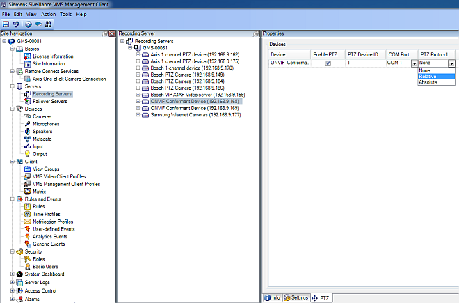
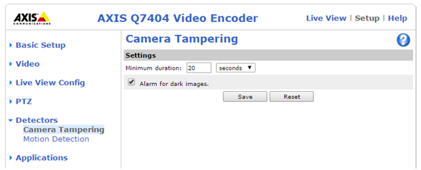
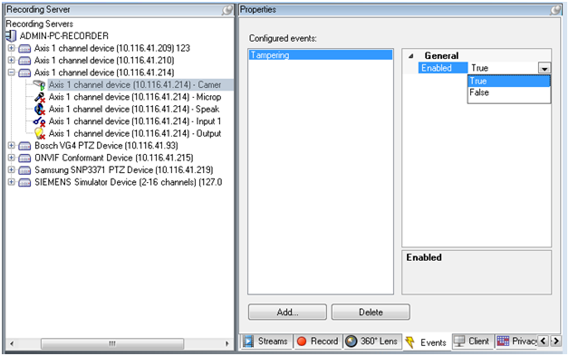
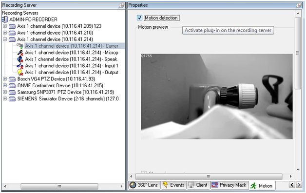
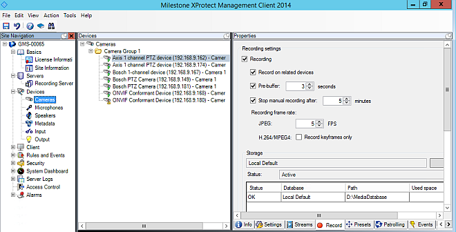
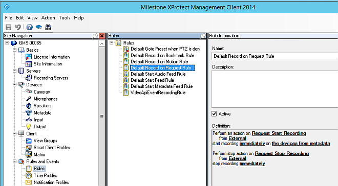
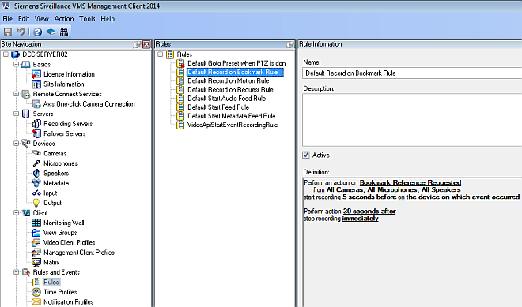
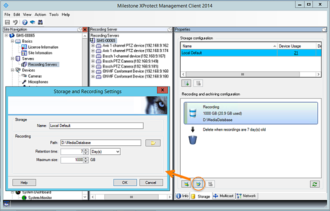
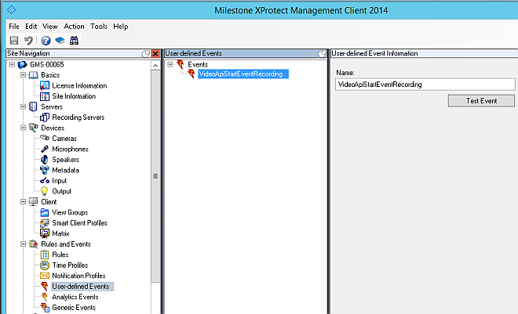
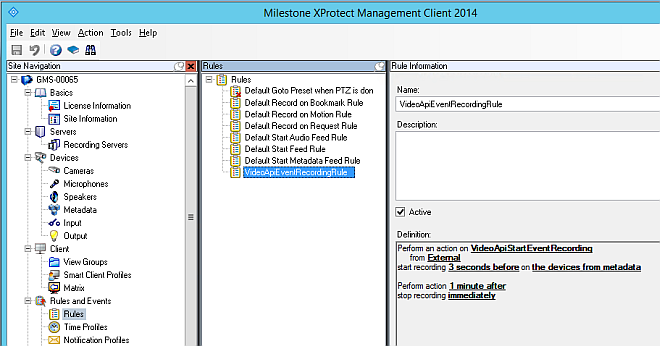

Configuring Video Devices in the VMS
This section contains instructions for configuring video devices, such as cameras, in the video management system (VMS). This needs to be done before connecting the VMS to Desigo CC. For the main integration workflow see Integrating Video Surveillance.
Prerequisites
- The VMS Management Client is running.
Configure ONVIF PTZ Cameras
If cameras are connected to the VMS via the ONVIF driver, an additional configuration step is required to use the PTZ capabilities of the camera. Proceed as follows:
- In the Site Navigation tree, select Servers > Recording Servers.
- In the Recording Server pane, select and expand the server to which the PTZ camera is connected.
- Select the PTZ camera.
- In the Properties pane, select the PTZ tab.
- Select the Enable PTZ check box and choose the PTZ Protocol.
- Depending on the camera model, Relative or Absolute PTZ Protocol will work. Use the Absolute PTZ Protocol if the camera supports it. This enables you to specify PTZ presets via the VMS Management Client. With the Relative PTZ Protocol, all presets have to be configured via the web page of the camera.
In either case, note that PTZ presets cannot be defined from the management platform.

Configure Video Device Tamper
To receive tampering events, you must configure the tampering event for all VMS channels.
- Enable tampering detection on the device. This is typically done on the homepage of the device. Refer to the user manual of the vendor for detailed help on this level.
As an example, the following image illustrates the tamper configuration for an AXIS camera. 
- Enable the tamper event needs on the VMS.
In the Events tab of the Channel Device, set the Tampering event to Enabled (True).

Configure Motion Detection
To receive Motion Detection events, you must configure the motion detection in the VMS channels. The internal motion detection VMS plugin is used.
- Configure the motion detection in the Motion tab of the Channel Device according to the VMS documentation.
NOTE: Motion events from the camera itself are not supported.

NOTE: The Motion Started (HW) and Motion Stopped (HW) events in the camera Events tab are not relevant for the motion events (those events are handling the camera internal motion events that are not supported).
Configure a Camera for Recording
To use recording, you must activate the camera recording option in the camera Property page in the VMS management client. The state of the activation is reported by the Video API and displays in the system configuration page.
- In the Site Navigation tree, select Devices > Cameras.
- In the Devices pane, select the camera node.
- In the Properties pane, select the Record tab.
- Select the Recording check box.
- Set recording buffer size in the Pre-buffer and Stop manual recording after fields.
- Click another node and, when prompted, choose Yes to confirm the changes.

Set Up Rule For Manual Recording
In Desigo CC, manual recording is initiated by the operator through the Start Rec Manual command in the Extended Operation tab. To be able to use manual recording, the Default Record on Request Rule must exist and be active in VMS. This is the default setting after a VMS installation.
You can customize the recording time durations taking into account the maximum pre-recording buffer defined in the camera configuration.

Set Up Rule For Bookmark Recording
In Desigo CC, bookmark recording is automatically triggered when the operator issues one of the tag commands--Free Tag, Rec Tag, or Manual Tag--in the Operation tab. To be able to use bookmark recording, the Default Record on Bookmark Rule must exist and be active in the VMS. This is the default setting after a VMS installation.
You can customize the recording time durations taking into account the maximum pre-recording buffer defined in the camera configuration.

Set the Video Archive Retention Time
Video tags are stored inside the VMS editions that support the feature as bookmarks. The lifetime of bookmarks depends on the retention time configured here for the video archive.
NOTE: Depending on the VMS version you are using, this setting may or may not affect the tag lifetime. For more information, refer to Milestone / Siveillance VMS Reference.
- In VMS, a recording Archive exists in the Storage tab of the Recording Server configuration.
- In the Site Navigation tree, select Servers > Recording Servers.
- In the Recording Servers pane, select the server.
- In the Property pane, click the Storage tab at the bottom.
- Click the Edit Recording Storage icon.
- The Storage and Recording Settings dialog box displays.
- Enter the Retention Time: value and units, for example, 7 Days.
- Click OK.
- The new Retention Time is set.

Make sure that the retention time you configure is adequate for the needs of the building site.
Set Up Custom Rules for Event Recording
Event recordings are automatically triggered by the occurrence of an event. In Desigo CC, this is configured through the automatic video step in an operating procedure. It corresponds to issuing a Start Rec command of Event type in the Extended Operation tab.
NOTE: The bookmark recording typically also covers events, but you may want to have a specific rule for events in the following cases:
- Your VMS does not trigger video recording upon setting a tags.
For more information, refer to VMS Supported Editions and Versions. - You want to have specific pre- and post-event time durations for event recordings.
To set up event recording complete the following steps in VMS:
1 - Create a User-Defined Event in VMS
To customize event recording, you must first create a user-defined event in VMS, for starting the recording. This user-defined event must have the following name: VideoApiStartEventRecording.
- In the Site Navigation tree, select Rules and Events > User-defined Events.
- In the User-defined Events pane, right-click and select Add User-defined Event...
- Enter the name VideoApiStartEventRecording.
- Click OK.
- The new user-defined event is set.

2 - Create Rule for Event Recording
To customize event recording, you may need to create a rule as described in the following procedure.
The rule allows you to define specific pre- and post-event recording timings.
- In the Site Navigation tree, select Rules and Events > Rules.
- In the Rules pane, right-click and select Add Rule...
- The Manage Rule window displays and shows the Step 1: Type of rule page.
- In the Name field, enter VideoApiEventRecordingRule.
NOTE: The Description field is optional. - Select the Active check box.
- In the Edit the rule description section, click the underlined text event in Perform an action on event.
- In the Select and Event dialog box, expand the tree and select External Events > User-defined Events > VideoApiStartEventRecording.
- Click OK.
- Click Next.
- The Step 2: Conditions page displays.
- Clear all options.
- Click Next.
- The Step 3: Actions page displays.
- Select the Start recording on <devices> option.
- In the Edit the rule description section, click the underlined text immediately in start recording immediately.
- The Relative Time dialog box displays.
- In the Relative Time dialog box, select (for example) -3 Seconds.
- Click OK.
- In the Edit the rule description section, click the underlined text recording device in start recording 3 seconds before on recording device.
- The Select Triggering Devices dialog box displays.
- In the Select Triggering Devices dialog box, select Use devices from metadata.
- Click OK.
- Click Next.
- The Step 4: Stop criteria page displays.
- Select the Perform stop action after <time> option.
- In the Edit the rule description section, click the underlined text time in Perform action time.
- The Relative Time dialog box displays.
- In the Relative Time dialog box, select (for example) 1 Minute.
- Click OK.
- Click Next.
- The Step 5: Stop actions page displays.
- Clear all selectable options.
- Click Finish.
- The new rule is configured.

NOTE: You can extend the time duration of pre- and post-event recordings. To extend the time duration of post-event recording, change the value of the rule definition in stop recording <time> after. If you want to extend the time duration of pre-event recording, you need to change the following:
- The value of the rule definition in start recording <time> before.
- The Pre-buffer value in the Record properties in the camera configuration.
- The Pre-buffer value must be equal or greater than the value of the start recording <time> before field.